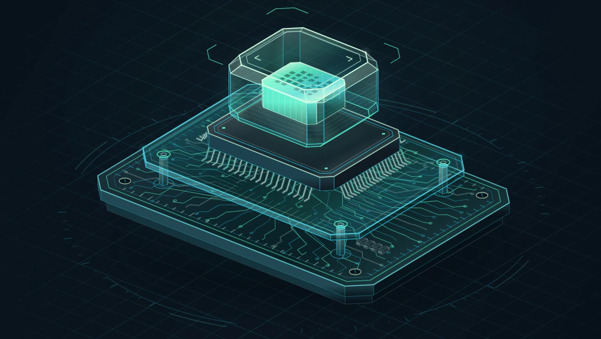
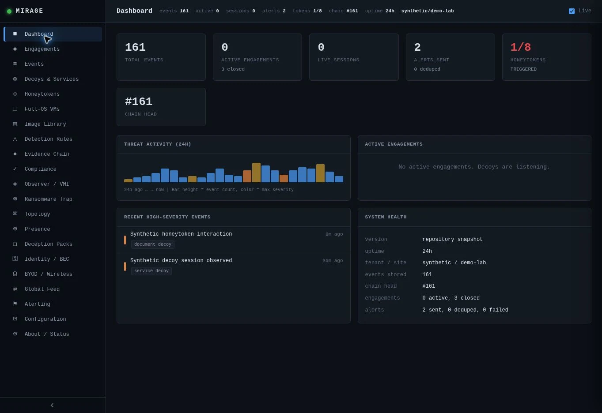

AI сигурностКадър от приложението
AI DLP Guard
Проверка на промптове, файлове и заявки от инструменти за програмиране за чувствителни данни.
AI сигурност / Red Team / Тестове за проникване / Автоматизация
Разследвам реални инциденти по сигурността, тествам системи за уязвимости и разработвам инструменти за автоматизация на процесите в сферата на киберсигурността. Работата ми обхваща тестове за проникване (penetration testing), сигурност на изкуствения интелект (AI security), откриване на заплахи и разработка на софтуер за сигурност.




Проверка на промптове, файлове и заявки от инструменти за програмиране за чувствителни данни.
Интерактивна лаборатория за горене в микрогравитация с данни на NASA.
Уеб платформа за разследване на IP адреси, файлове и подозрителна поща с проследим източник за всяка справка.
Сравнение на тестове на езикови модели с проследими доказателства за всяка уязвимост.
Един настолен клиент за VPN профили под Windows и Linux.
Асистент, който превръща административните процедури в списъци със стъпки и източници.
Изследователски дневник
Практически тестове, конфигурации и научни публикации, свързани с проектите.
Всички публикацииУправление през Wi-Fi, поверителност на видеото и резултати от изпитванията на Ryze Tello.
Заявка като текст и изображение могат да дадат нула открития. Четири локални проверки с AI DLP Guard показват как да различим двата случая.
В таблицата FLEX има повторения при сходни условия. Начинът на разделяне на опитите определя как да тълкуваме грешката на модела.